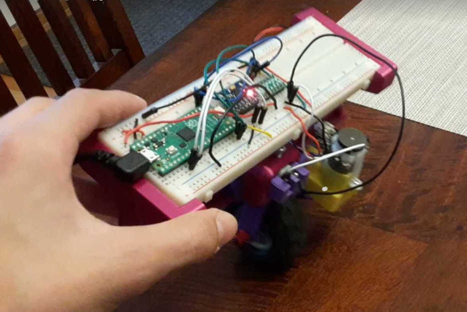

Alex Montello | Engineering Projects
Leviathan
Context
I led the design, fabrication, and assembly of this robot for the FIRST Tech Challenge Into the Deep season in a team of 14 people. The robot's goal was to quickly intake blocks from the central, walled-off area, and either hang them on a bar or place them into a bucket. There was also a challenge to climb a ladder-like structure at the end of matches. The FTC Competition Manual outlined the rules for robot design and gameplay, such as size limits and allowed motors, batteries, and control systems.
- Pocketed parallel plate waterjet aluminum drivetrain
- Three odometry deadwheels, three drivetrain integrated limit switches, one color sensor, and two ultrasonic distance sensors
- 3 DOF intake system and 4 DOF output system with differential, each with continuously strung slides, an arm, wrist, and claw
- Multiple advanced computer vision capabilities including perspective to top down orthographic transformation, custom neural network block detection, and line detection based angle estimation
- Novel constant force spring mechanism with 15 lb retraction force safely toggleable by a servo to assist ladder climbing with vertical extension, along with sprung passive hooks
- Finite state machine and driver assists using all sensors and motor encoders with PID controlled extensions
Design Choices
Our team used weighted objectives tables and design reviews to begin our engineering process, and we prototyped many potential solutions before selecting our design. After identifying that a low mass, agility, and parallelization were ideal for this competition, we positioned high-mass components as low as possible in our compact drivetrain and heavily pocketed the aluminum plates. In order to speed up cycle time, we opted for two separate extensions for intake and output, each with several degrees of freedom to reduce drivetrain movement and allow agile mechanisms to perform fine adjustments and operate in parallel for both types of cycles. To avoid speed reductions on our vertical extension, I developed a new constant force spring mechanism to artificially increase the downward force of our extension during the hang period while maintaining high speed under driver control without using higher torque motors. To automate as much of operation as possible, we used sensors to trigger every step of our transfer, driver assists, and PID control with feedforward gravity adjustments.
Sursum Ad Junction
Context
I contributed to the design, fabrication, and assembly of this robot for the FIRST Tech Challenge PowerPlay season in a team of 8 people. The goal was to stack plastic cones onto tall, compliant poles. The FTC Game Manual outlined the rules for robot design and gameplay, such as allowed motors, batteries, and control systems.
- Mecanum drivetrain with color sensors, deadwheel odometry, and heading lock
- <4 s cycles onto highest possible pole
- Virtual four bar arm (belted) with horizontal geared claw
- >1 m of vertical extension with vertical slides, assisted by constant torque springs
- Robust polycarbonate shell and walls
Design Choices
Our team used weighted objectives tables and design reviews to begin our engineering process, and we prototyped many potential solutions before settling on our design. We prioritized modularity and consistency, and achieved this by using standardized components and easily removable subassemblies. Our 3D printed parts were tested in many 3D printed materials for our parts to lighten and stiffen them over time, including nylon, PETG, and alloy 910, and we tested several types of string for our rigged extension.We opted for a virtual four bar arm to avoid a transfer mechanism and maintain the cones' orientations as they were processed. This also allowed a passthrough cycle structure, eliminating the need to rotate the drivetrain each time. Our main vertical extension used constant force springing to counteract gravitational force and the virtual four bar arm was sprung to perfectly oppose gravity throughout its range of motion, so we could focus on optimizing these mechanisms for speed and consistency.
Cable Driven Manipulator
Context
This was a one-week independent project I created to learn about parallel manipulation, kinematics, and control systems. My goal was to build a device to move a platform around in 3D space with any orientation using remote actuation with a relatively high speed. Although spools seem to be generally used for this type of robot, I used servos due to the limitations of the REV control hub and for an additional engineering challenge.
- Wired using the REV control hub like FTC
- Six single arm V-pulley based cable actuators using a 1:2 mechanical advantage return string
- Cable start points arranged in a triangular antiprism surrounding about a 72600 cm³ workspace
- Hexagonal prism platform with six cable contact points movable in 3 translational directions and with 3 axes of rotation
- Automatic servo movement from target position and Euler rotation at about 0.9 m/s or 7.5 rad/s using remote control
- Uses inverse kinematics to calculate angles for each servo using matrices and a unique polynomial regression for each arm
Design Choices
Due to a six servo limit, I used a critically constrained setup with six cables arranged in a setup with diverse tension directions across 3D space. This evolved into a triangular antiprism on the outside connected to a hexagonal prism of attachment points the inside, allowing each cable to have a meaningful and necessary tension vector to enable all six degrees of freedom. As the work area was very large, I laser cut a hexagonal base to mount each component with countersunk screws from below, and used the same configurable 3D printed cable redirection block on each vertex with 3D printed V bearings. Half of these blocks had a vertical aluminum extrusion for the upper cables, and the other half released the cables from near the base. To maximize range of motion using servos with limited ranges, I implemented a unique single arm tension system where a fixed endpoint on the cable was lengthened by a V bearing on the arm as it rotated, doubling the length differential over mounting the endpoint on the arm. I used matrix operations and interpolated polynomials from experimentation to calculate angles for each servo given a target position vector and Euler rotation vector. To ensure control during motion, I added tension biases to each servo, but found that more complex tensioning systems incorporating the arm angle were unnecessary.
Ball Drive Pod
Context
This was an independent, two-week project I completed fully independently. My goal was to create a very small robot capable of balancing, moving, and rotating about a vertical axis, using one spherical wheel. The purpose was to learn more about control systems, locomotion using 120 deg symmetry, and compact packaging.
- Wired using the REV control hub like FTC
- Three omni wheel modules with a 7:5 gear reduction powered by servos
- Springs and hardstops keep modules at the right positions and centered
- IMU used to find pitch and roll data at 50Hz with PI controllers for both axes
- Remotely controllable in x, y, and direction
- Clean, cylindrical enclosure with no exposed electronics
Design Choices
I wanted to leave the entire robot above and separable from the ball, so the three wheels were positioned at 45 deg angles of elevation and sprung inward to increase friction and grip. To spring them inward, each wheel module was supported on bearings and were hardstopped inwards by each other and outwards by the cylindrical enclosure. Inside each module was a 7:5 ratio of double helical gears, integrated into the omni wheels and servo attachment for a lower part count. Low profile flanged bearings were used on both sides of each rotating member to make them more robust and durable. The control system, battery, and wiring, were all integrated cleanly into the cylindrical enclosure, with paths designed into the part for the main wires, and the top is removable and allows easy access to replace the battery.
Polar 3D Scanning Device
Context
This was an independent, one-week project I completed fully independently. My goal was to create a rudimentary 3D scanner that would use an imprecise ultrasonic distance sensor to create a rough model of an object on the scale of several inches. I wanted to explore 3D reconstruction using Onshape featurescript and motor encoders, but understood that the sensor I was using had significant noise and a wide field of view, hindering precision.
- Wired using the REV control hub like FTC
- Vertical linear slide with rack and pinion actuation using compound gear ratio with pinion
- Continuous DC motor powered turret with encoder
- Four screw clamps to support scanned object
- Optical 2 m distance sensor to guage depth and associate with angle and height values traveling in a helix
- Onshape Featurescript program to convert .csv files into a model by subtracting cones from a body
Design Choices
Rather than pivoting the robot around the scanned object, I opted to rotate the object on a large turret to reduce moving mass and complexity. This involved using a 10:1 gear reduction and a laser cut gear stack to avoid 3D printing large parts. I used a rack and pinion with this specific gear ratio to map the 270 deg range of the servo to the 250 mm vertical extension. Both of these decisions balanced precision with speed, and allowed for precise encoder readings to correspond to distance measurements. On the software side, I made a simple program to remove cones from a cylindrical 'stock' piece, with each cone's vertex at the position of the sensor at that point and the base representing the distance detected. The angle of each cone stayed constant, as the field of view of the sensor, and the resulting form was a rough reconstruction of the original object after iterating through each detection.
Nerf Gun Turret
Context
As one of my first larger robotics projects, I wanted to create a 3D printed housing for my large automatic Nerf gun and use computer vision to automatically track and fire at targets. The goal was just to improve with electronics and programming, and get more familiar with designing for 3D printing and fasteners. I tried to use only materials I had easy access to, such as smaller gearmotors, standard circuit components and bearings, and 3D printed parts, but I ended up ordering a few extra electronics parts.
- 30:1 gear ratio turret for yaw rotation
- Spool and string for pitch rotation
- YOLOv8 AI model to detect people (or other common objects)
- Proportional control loop to align with detections without oscillation
- Communication from python to Arduino through serial
- >8 frames processed and commands sent per second using OpenCV
- Rapid fires as long as a target is centered
Design Choices
Since the Nerf gun had very high inertia, I used a turret with a large gear reduction printed in four modular segments with dovetail joints to allow amplify the torque of a smaller motor. Again, to allow a smaller motor to control pitch rotation, I used a string and spool mechanism attached to the lighter side of the pivot position and allowed gravity to tension the string. The battery, breadboard, and wires were mounted to the turret as well, and buttons were added to turn the tracking and power on and off. The motors I had were inexpensive DC gear motors without encoders, so the tracking had to be done in relation to the current position of the gun, meaning the camera would be clamped onto the front of the gun and provide relative positioning information. Motion blur and latency were also concerns, so tracking was slower than desired, and the gear reduction further slowed yaw movement.
2-Axis Gantry
Context
This was one of the first independent robotics projects I made, and its purpose was to allow an effector to precisely access any point in a work area made configurable by clamps and be controllable either manually or autonomously with instructions from Python. The stepper motors, belts, and bearings were purchased, but all other components were either from a standard electronics kit or 3D printed.
- Controlled by 2 stepper motors with GT2 belts
- Operable manually using a joystick, or automatically
- Adjustable size using custom 3D printed clamps located on the belts and bases
- Single servo end effector for X, Y, and Z movement
- Uses an edge detection based approach to convert color images into minimal traceable paths with a pen fully autonomously (no documentation)
Design Choices
Stepper motors were ideal for this device due to their high precision and easy integration. Since I only had two, I used one on each axis and mechanically linked both sides of the X axis together to ensure synchronized movement and prevent a moment from developing on the side opposite the motor from asymmetric loading. GT2 belts were selected for their low backlash and high positional repeatability. Sanding the steel rods that formed the structure allowed for a tight transition fit of the bearings and reduced friction between sliding components. Each contact with these steel rods had a 3D printed compliant clamp that could be tightened and undone easily, as did the GT2 belt clamps, such that the length and depth of the grantry as well as belt tension could be easily adjusted. On the end effector, I used another 3D printed compliant clamp to hold the pen in place while allowing for easy replacement and tuning, and a small rack and pinion system to raise and lower the pen. Autonomous tracing was achieved using an edge detection algorithm that converted color images into minimal path sequences, enabling the pen to follow contours without predefined toolpaths.
Etch-a-Sketch Robot
Context
This was a small one-week project I completed independently to practice building an enclosed, user-facing system with a compact and streamlined design. The goal was to draw any pattern or image on an Etch-a-Sketch toy, be easily removable, and be connected to a laptop for control.
- Two small stepper motors with set screw grippers to operate both dials
- Arduino, diagnostic LED, 12 battery connectors, and stepper drivers enclosed in a 3D printed enclosure for a small footprint
- Converts images into clean paths for the robot to follow using adaptive thresholding, skeletonization, and a simulated annealing pathfinding algorithm
- Autonomously follows paths using bidirectional serial communication and motor coordination
Design Choices
For precise motor control, I used two microstepping stepper motors to drive each dial. The housing was assembled in four parts for modularity and ease of assembly, while still not exposing any internal components and leaving access for necessary external wiring. I designed it to be bounded by the smallest footprint possible between the two dials while containing the microcontroller and stepper motor driver boards and not obscuring the screen of the toy. To add additional transparency and diagnostic information, I added a small captive blue LED in the top surface whose frequency indicates the proportion of the drawing that has been completed, as well as whether the device is recieving power. The dial grippers were simply PETG printed clamps that used a small screw and captive nut to constrain the dial against a cylindrical pad opposite the screw. To generate the paths, I first split the image into contours using adaptive thresholding (to use similar relative brightness comparisons throughout the image rather than an absolute scale) and contour detection. After splitting contours at sharp angles, a node graph was created representing allowable connected contour pieces that were sufficiently close, and a heuristic simulated annealing approach was used to find a path through the graph to maximize total arc length. Unfortunately, due to slop inside the Etch-a-Sketch that I had trouble measuring, error accumulated over the drawing, but otherwise the design was successful.
Entrapption Contraption
Context
I led the design, fabrication, and assembly of this robot for the FIRST Tech Challenge Centerstage season in a team of 8 people. The robot's goal was to repeatedly cycle small, flat, hexagonal plastic pieces from one corner of the field to a sharply angled board at the other corner. At the end of each match, robots launched paper airplanes a precise distance and suspended themselves on a bar. The FTC Competition Manual outlined the rules for robot design and gameplay, such as size limits and allowed motors, batteries, and control systems, and this game field had several obstacles to be navigated.
- 2 stages of rubber spinning wheels chained together to flip the game pieces into the robot, mounted on a belted arm to be able to intake stacked pieces
- Triangular conveyor belt transfer mechanism to carry game elements from the intake to the output pockets
- 970 mm of vertical extension using linear slides, as well as a second belted arm housing 2 plungers to precisely score the game pieces
- <12 s cycle time from intake to output
- Precise paper airplane launcher
- Parallel plate mecanum drivetrain with 3 deadwheel odometry pods
- 30 s autonomous programming using object detection and a finite state machine
- Driver assists with distance and touch sensors
- Mechanism for suspending robot from elevated bars
Design Choices
Our team used weighted objectives tables and design reviews to begin our engineering process, and we prototyped several potential mechanisms for intake and scoring before settling on our intended design. We prioritized compactness and parallelization, and achieved this by building a low profile mecanum drivetrain with pocketed aluminum plates and a passthrough transfer. Since the pieces could be handled in pairs, we used a heavily iterated dual-stage intake arm with rubber star shaped wheels to quickly grab them form the ground side by side or off of a stack using a TPU 3D printed ramp with zero ground clearance. Over the season, we developed a conveyor belt system to facilitate moving the game pieces to our transfer zone, experimenting with high-friction rubber materials to maximize grip. We ended up with a tightly constrained conveyor system below and above the transfer area that enforced game elements being directed to the right places side by side and easily accessible for the output system. To score the pieces, we used two independent plungers with high friction material in a symmetric assembly to release them quickly near the edges of the board and in any order. We used two distance sensors and solved the trapezoid formed by their lines of sight to align autonomously to the board, and our angled extension coplanar to the board enabled height adjustments without needing drivetrain adjustments.
Articulated Arm
Context
This was a one-week independent project I created to learn about kinematics, modular assemblies, and generally improve with mechanical design with rigidity and load-bearing capabilities in mind. The purpose of the project was to design and build a robotic arm capable of positioning an effector in a large work area in 3D space with additional degrees of freedom in the wrist and claw. I opted for a four part screw claw to increase grasping capability and add an engineering challenge, as well as staying consistent with the worm gear theme elsewhere in the robot.
- Wired using the REV control hub like FTC
- Three worm drives controlling both segments of the arm and the turret base to prevent backdriving and keep the DC motors at the base
- Main non-driven axle supporting two gears and a pulley to drive the secondary arm segment
- Majority of components made from PETG and delrin for shatter resistance and toughness
- Compact four finger compliant screw claw with both pitch and axial twisting degrees of freedom from a differential wrist
- 150 mm to 700 mm radius spherical shell work envelope
- Up to 1.2 rad/s for each arm segment and 0.9 rad/s on the turret
- Inverse kinematics used to position the arm and turret to target any reachable point
Design Choices
Since I wanted to make the robot resistant to backdriving and retain its state without power, I used worm drives to actuate the turret and both segments of the arm. These three degrees of freedom provide the main 3D positioning capabilities of the end effector, and were made rigid using precisely toleranced bearing stacks, numerous standoffs supporting both arm stages, and a well-tensioned HTD belt. The main body was designed in three sections to make replacement and maintenance easier, as well as allowing a more enclosed and compact assembly with high mass components in a cluster near the lowest pivot position. The robot was fastned securely to the turret with four bearing stacks with flanges on both sides and a grooved gear which fixed in space to support the weight of the arm. The claw is a tightly packaged removable assembly with three servos, housing a directly driven differential gear for roll and pitch as well as the screw that opens and closes the claw. Lastly, I derived the inverse kinematic equations to control the arm angles and wrist state given a target position and wrist pitch.
5x5x5 Rubik's Cube Robot
Context
This was a one-week independent project I created to improve my skills with automation and mechanism design with very many degrees of freedom in a small space. The purpose of the project was to create a robot capable of manipulating a 5x5x5 Rubik's cube in any way at a high frequency with one independent module for each face of the cube, and I also wanted to develop a computer vision system to scan the cube and schedule moves automatically.
- Wired using the REV control hub like FTC
- Six independent gripper modules, each with a linear and rotational degree of freedom and a pin to hold the cube on each face's center
- Linearly actuated cylindrical slider with radial teeth and hex bore, enabling in-out motion independent of rotation on a fixed hex shaft with a unique toroidal pinion design
- Chamfered TPU grippers to seamlessly manipulate a 5x5x5 Rubik's cube for both single layer and double layer turns
- Lockable hinge to enclose and release the cube easily
- Acryllic laser cut enclosure with brackets and aluminum extrusions for support
- OpenCV algorithm to calculate face colors from two vertex-on pictures (outside the robot) and automatically use an online tool to find a solution
- Sequential move scheduling algorithm to prevent gripper collisions or out-of-range servo movements without wasting moves and prioritizing simultaneous face movements
- Approximately 1.1 s per move cycle, including linear and rotational subcycles
Design Choices
To maximize the potential speed of the robot, I used one gripper module for each face of the cube, allowing for independent movement and faster overall operation. Each of these modules included linear and rotational actuation, with a mechanism designed to keep a linearly static contact point on the center of the cube's face regardless of the module's state. Given this constraint, I designed a mechanism that used a rack and pinion system where the rack was cylindrical with radial teeth meshing with a toroidal pinion, allowing the gripper to spin about its central axis without losing engagement with the pinion and vice versa. The central contact point had a hexagonal profile near its base to constrain the angular position of the gripper without locking it in place linearly or moving the support. The grippers were made of TPU with geometry such that they could slightly deform around the cube with chamfers to improve forgiveness. Six such modules, along with a hinged upper piece, formed the whole robot and allowed the cube to be removed and inserted with no disassembly. To scan the cube, two vertex-on pictures are taken of the cube, seven points of interest defining the cube's shape are selected, and the 75 visible tiles are categorized into colors using a lighting invariant method. I decided to use an existing website (Grubiks) to find the solution, and wrote the scheduling algorithm to maximize simultaneous moves and prevent the grippers from crashing during operation. Unfortunately, a circumstance outside my control during development prevented me from finishing the project and documenting a complete solve, but it is clear that the robot is fully capable of solving the cube as seen in the attached videos.
Mini Cable Carrier
Context
This was a one-week independent project I created just to learn about mechanism design in an unstable environment. My goal was to build a device capable of holding and releasing a large volume that could move along a string or cable while hanging from it. To make this more difficult, I added the additional constraint to make the problem harder that the robot should be resistant to strings or cables tied above the main cable, such as those holding it up, without losing momentum or falling. Although this was very difficult, it made the problem much more interesting and challenging.
- Wired using the REV control hub like FTC
- Collects items with an opening side door inside a PETG enclosure and deposits them via an opening trapdoor
- Moves bidirectionally along a suspended cable using compliant, rubber flywheels
- Four sprung rollers designed to deflect upward-tied cables that might suspend the main cable without inhibiting the robot's movement (unstable and ineffective in practice)
- Partially toothed gear with integrated sprung arm enables staged output control from a single servo
- Alternates between opening door and floor linkages across distinct rotation segments
Design Choices
To maintain stability when the robot encounters a vertically attached cable, I designed four sprung rollers that would deflect the cable backward one at a time while the other three supported the robot on the main cable. This seemed like the most simple and straightforward solution without an active gripping and releasing mechanism, which seemed too cumbersome and unstable. Ultimately, the four roller solution only was successful at very low speeds and failed when the robot swung along the cable too much while moving forward. I iterated on these rollers' profiles and spring forces such that they would stay in contact securely and snap back to their neutral position quickly without plastically deforming the springs, and I arrived at a decent solution but not one that performed sufficiently well. To move the robot along the cable, I used two 35A durometer compliant wheels mechanically linked and driven directly by a high speed motor to compress the cable between the two pairs of rollers. To use one servo for both the opening and closing functionality, I used a partially toothed gear and arm to both open the door at one side of the servo's range, open the floor at the other side of the range, and keep both tightly closed in the remaining middle region in the range to simplify and lighten the overall mechanism.
Stretching Robot
Context
I created this in a weekend just for fun to explore the additional potential degree of freedom that could be accessed with 45 degree angle holonomic (mecanum) wheels. These holonomic wheels allow strafing in X and Y as well as yaw rotation, but after noticing it was possible to apply opposing forces in the lateral direction in both sides I built a base with robustly attached linear slides to enable significant horizontal extension, passively controlled by the wheels.
- 4 mecanum wheels (geared with 19.2:1 DC motors for speed)
- 3 stages of linear slides on each side with >1.3 m of horizontal extension
- Multiple modes of control possible, including one joystick for each side of the drivetrain, one joystick for translation and the other for rotation/extension/contraction, and 2 controller mode
- Scissor linkage and mesh tube for wiring
Design Choices
This was a fairly simple and straightforward construction, it consisted of four vertical motors with bevel gears driving each wheel independently. This architecture was chosen because it was easy to build and work with and didn't take up very much space laterally. I attached the linear slides using plasma cut aluminum plates symmetrically and used a coiling telephone cord to manage wiring between halves and a simple 3D printed platform for the control system and battery. To explore as many modes of control as possible, I decided to allow the driver to cycle through three control modes, each making certain motion types easier to perform. To make the wiring more secure, I prototyped a laser cut scissor linkage, but this was removed due to buckling concerns.
Mini Block Launcher
Context
This was an independent, one-week project I completed fully independently. My goal was to create a small robot capable of launching blocks with adjustable initial velocity and yaw, theoretically being able to land the block on any position in a disk around the turret. The goal was also to be able to launch and index many blocks in a scalable manner. The decision to use a linear mechanism rather than a rotating flywheel was purely because it was more interesting to me.
- Wired using the REV control hub like FTC
- Magazine holding 9 blocks vertically
- Rectangular plunger serving as indexer and piston
- Spring with adjustable relaxed position to change exit velocity
- Reciprocating rack and pinion using a sector gear for continuous rapid fire
- 360deg turret to aim along the vertical axis
Design Choices
The launcher pivoted on one servo, which was fixed, and the spring preload was controlled using a second servo and a single arm link to change the spring's initial extension over twice the radius of the arm, defining the slowest and fastest launches. I opted for a continuous motion to launch the projectiles to facilitate back-to-back launches and simplify the control of the turret, and achieved this using a partially thoothed sector gear that would interface with a gear rack over 70% of its rotation, pulling back the plunger and simultaneously allowing the block to fall into position, and release during the other 30% to allow the plunger to snap forward, both launching the block and retaining the stack safely with the body of the plunger. I used low-friction PETG laser cut with L brackets to form the stack so the blocks could slide down easily, and a rack and pinion to simplify linera motion.
Balancing Robots

Context
As one of my first integrated hardware and software projects, I built a one wheeled robot which used an IMU to balance itself, as well as a similar two wheeled version. I wanted to use only parts I had on hand, which was both motors and all electronic components, and 3D printed parts. Due to a very low mass moment of inertia about horizontal axes, it was incredibly difficult to successfully tune the control system, so only temporary balance could be achieved.
- First uses 1 bevel geared wheel and a breadboard on a rack and pinion to balance in 2 dimensions
- Second uses 2 wheels to balance in 1 dimension (no documentation)
- Proportional and derivative control loops with accelerometer data to balance in response to disturbances
- Battery pack and Raspberry Pi Pico microcontroller
- Only somewhat effective, the 2 wheeled version was significantly more responsive
Design Choices
I decided to apply torques in the pitch direction using the wheel(s) and in the roll direction by moving the breadboard, the heaviest component, side to side. This was done using a rack and pinion controlled from the bottom and was able to shift over half of the robot's weight laterally by several inches. To control the robot, I used simple sensor fusion techniques with the accelerometer and integrated gyroscope data and a PD control loop, as this performed the best while experimenting. However, I found that most of the time the motors weren't able to react quickly enough to stabilize the falling robot.